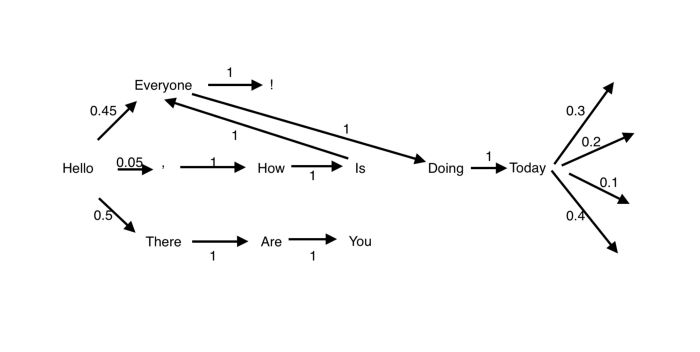

Markov chain can help a program make decisions -- for example, text prediction.

For example:
when you’re writing emails, Google predicts and suggests words or phrases to autocomplete your
email. Here is a simple diagram to suggest how it works.
Q: But, how will the computer know which arrow (vector) to go, if the computer is not "born" as a
native English speaker?
A: In English grammar, clearly there're certain rules that will decide if word B can be used after
word A, including conjugation, tenses, single/plural...etc. For instance, In a web program, we use
external javascript library to manage this.
Q: Then, if there're multiple choices, all grammarly and logically correct, as the next node on a
Markov chain, how will the computer decide which one to be picked?
A: Here we comes to another important part of text prediction: you predict how Shakespeare would
write that sentence, by analyzing some Shakespeare data and get your programmed trained with that
"style".